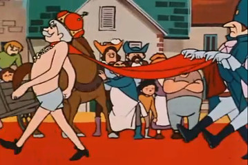
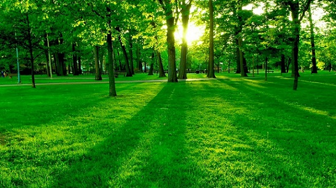
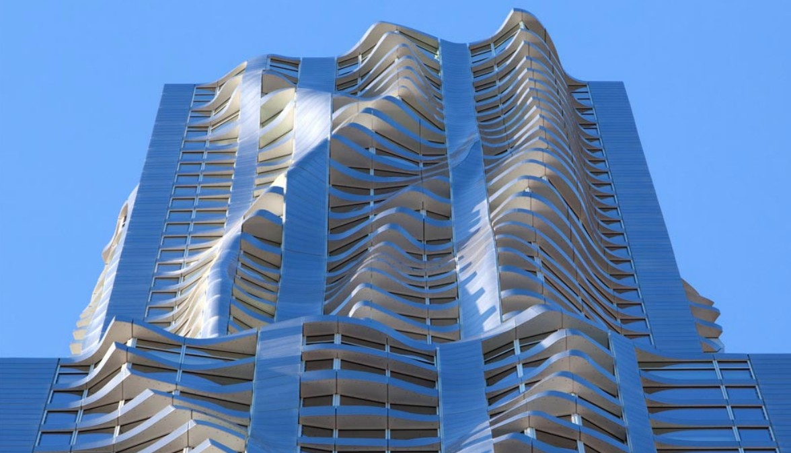

Pasiunile mele

Povesti
Povestile sunt o metoda de a evada din realitate si de a da frau liber creativitatii. Imi place sa citesc povesti. Imi place sa scriu povesti. Cand voi fi mare vreau sa fiu scriitor.

Natura
Natura din care facem parte si pe care trebuie sa o ingrijim este prietena mea.
Imi place sa merg desculta prin iarba, sa ascult pasarele, sa simt vantul si sa ma incalzesc la soare. Florile colorate sunt cele mai frumoase. Iar iarna este minunata cand este totul alb.

Constructiile
Cand ma plimb prin oras analizez cladirile
Cladirile vechi au mai multe detalii, pe cand cele noi sunt facute practic, cu linii drepte, fara ornamente.